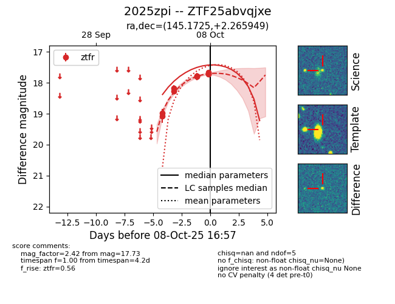
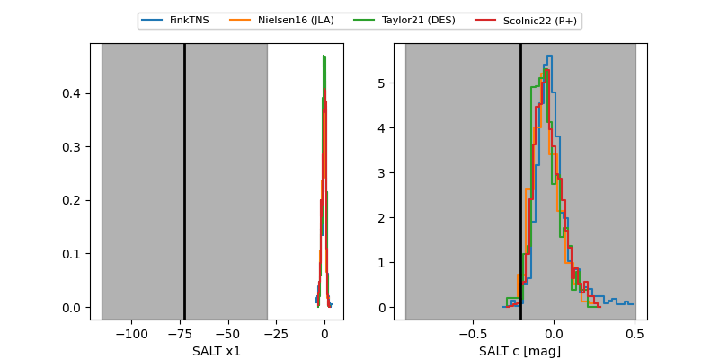

FINK: ZTF25abvqjxe
Lasair: ZTF25abvqjxe
ALeRCE: ZTF25abvqjxe
TNS: 2025zpi
YSE: 2025zpi
ZTF25abvqjxe (ztf,fink)
2025zpi (tns,yse)
equatorial (ra, dec) = (145.1725,+2.26595)
galactic (l, b) = (233.1093,+38.07432)


last ztfr=17.73
10 ztfr detections